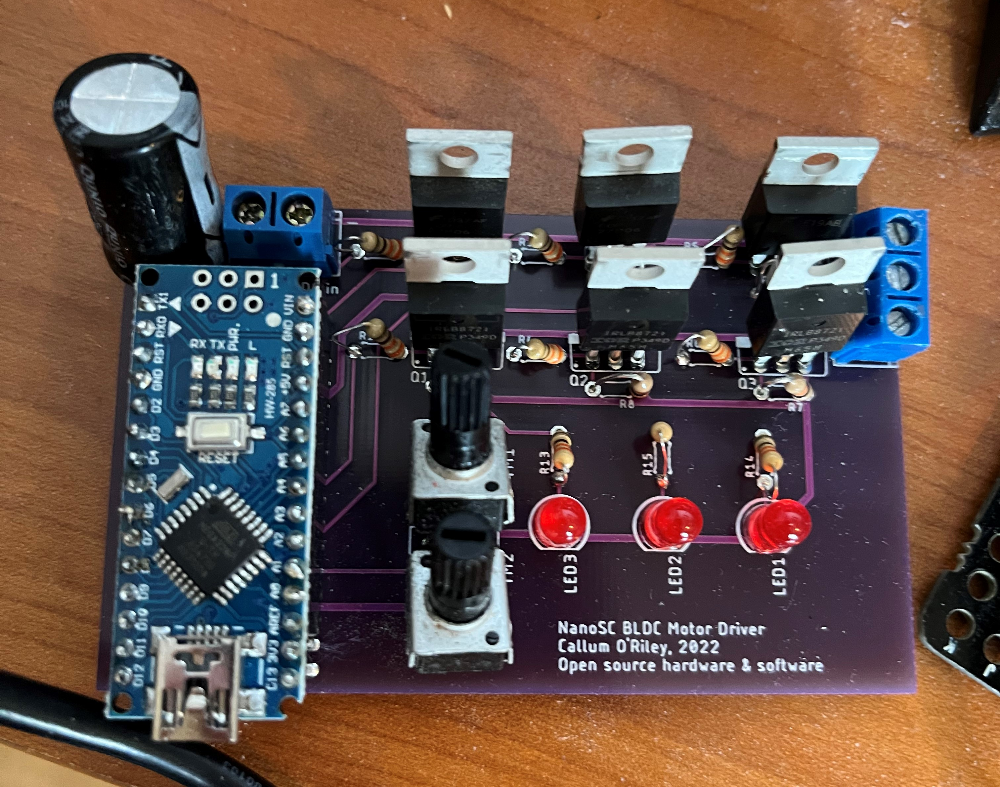
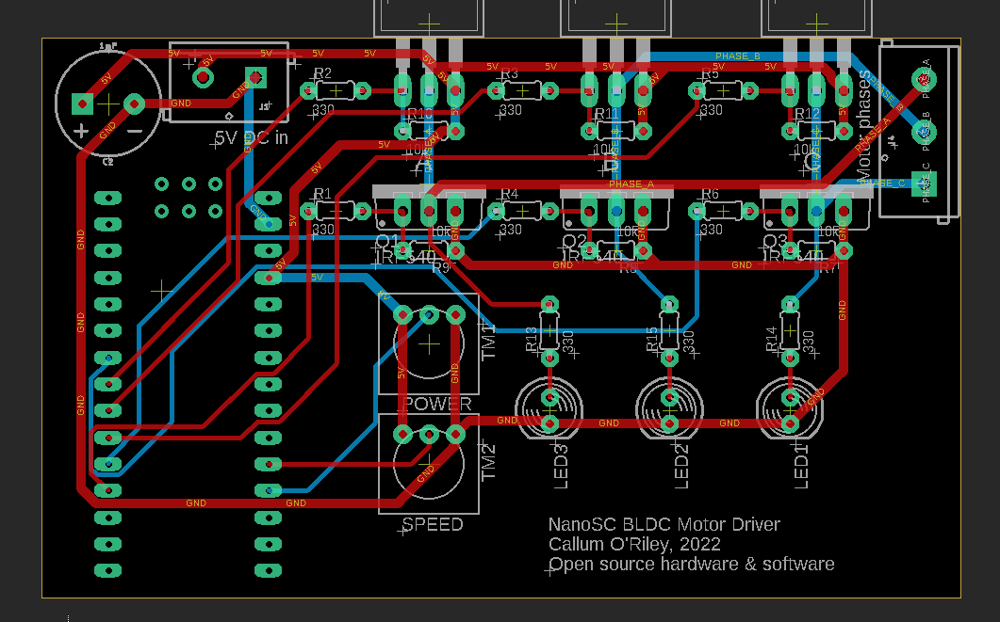
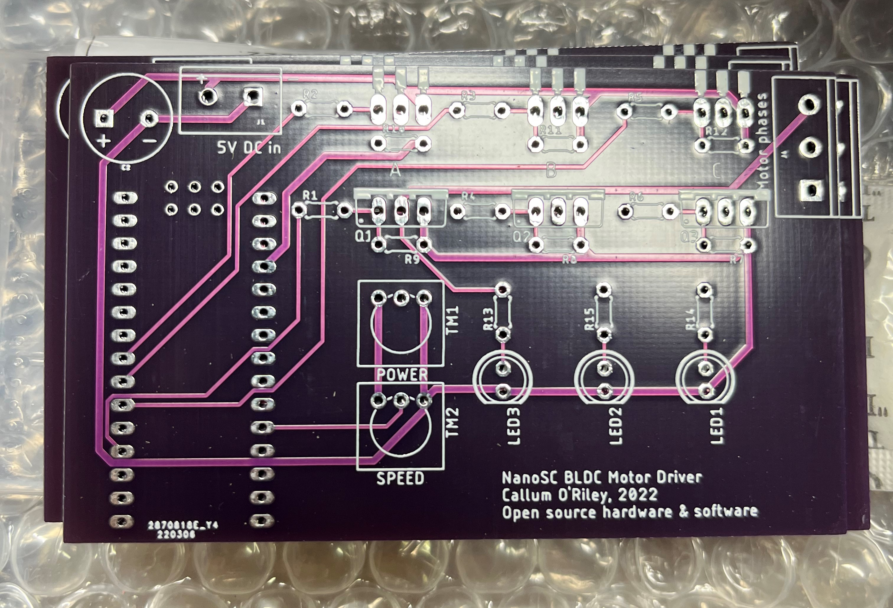

NanoSC BLDC Motor Driver
This is an ongoing project that I'm working on. If there are any updates, they will be posted to this page.
The NanoSC BLDC motor driver is a homemade brushless DC motor driver that I have designed called the NanoSC, standing for Arduino Nano Speed Controller. The goal of the project was initially to create a device to test BLDC motors that I salvaged from old electronics, but it grew into a robust and flexible platform on which I could develop new motor control schemes. I wrote a blog post on the prototype of this device that you can read here.

The PCB design was done with AutoDesk EAGLE because I use it for my design team and will be using it for my summer internship. I basically transcribed the final circuit that I assembled on the breadboard into a new schematic, generated a rough layout for the components, and then routed the wires manually. I ordered the PCBs from JLCPCB with a purple solder mask (which didn’t look as good in person as I was hoping, likely because of the lack of a ground plane). The board took about an hour to completely solder components onto, but after that, it worked first try!


Another major update on the project is that I wrote some better code for the driver. The original Arduino code used millis() and delayMicroseconds() to generate the time events (commutating the motor, generating the PWM signal, etc.), but for the new version of the code, I learned about AVR timer interrupts and generated the time events using the ATMega328p's timer 0 (for generating the PWM signal) and timer 1 (for performing the motor commutation). As of writing this, the timer code isn't 100% perfect, and it performs worse than the original version, so the next steps in the coming weeks are to fix that code.
As this is an ongoing project, I can continually refine and improve my design. There are a few things that I am going to change in the next iteration. For one thing, the circuit needs an exact 5V input, because the Arduino is directly switching the high-side P-channel MOSFETs. In the next iteration, I will add NPN BJTs to the gates of the high-side P-channel MOSFETs to pull the high side switches low when a current is applied to the base of the BJT. This will allow the use of P-channel MOSFETs (and the ability to not use a driver IC) as high-side switches at higher motor voltages. I will also add a jumper to connect or disconnect the external power supply to the VIN pin on the Arduino, so that it could be optionally powered by USB while the motor is powered by the external supply. This would allow me to control the motor from an application on my computer in real-time, instead of just controlling it via potentiometers on the board itself. I also want to add back-EMF control by reading the voltages of the motor phases with the analog input pins of the Arduino and a voltage divider. I also want to increase the trace width of all the power traces, because seeing the traces in person really shows how small they are, and smaller traces limit the maximum allowed motor current. I also want to add a header for a Hall-effect sensor input, so that I have the option to use sensored motors in the future.
I have also put the code and schematics on a GitHub repository, if you want to see them.